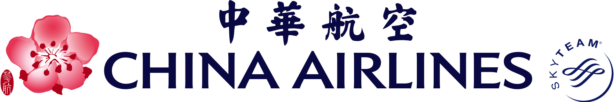

中華航空公司簡介
中華航空介紹
 中華航空（英語譯名：China Airlines），簡稱華航（CAL），是中華民國的國家航空公司，也是臺灣最大民用航空業者，為華航集團的核心企業。
中華航空（英語譯名：China Airlines），簡稱華航（CAL），是中華民國的國家航空公司，也是臺灣最大民用航空業者，為華航集團的核心企業。
主要轉運中心為桃園國際機場，總部設於緊臨桃園國際機場的華航園區。目前以經營國際航線及兩岸航線為主（包含客運與貨運），航點遍布30個以上國家及地區。
其成立之初亦有經營國內航線，惟考量企業內部資源及營運重心整合，自1998年全部轉由子公司華信航空經營。旗下還擁有低成本航空公司台灣虎航，
以搶攻臺灣出發或轉運的國際低成本航空市場。
華航在1959年由中華民國政府為首出資創辦，目前以間接持股方式擁有多數股權。華航是臺灣航空業共享代碼合作的先驅業者，目前與22家國際航空業者合作經營多條共享代碼航線。
為了使航網效益極大化，華航於2011年9月28日加入天合聯盟，是首間加入國際航空聯盟的中華民國籍航空公司。
歷史

草創時期
1949年第二次國共內戰末期因中華民國國軍不敵解放軍而戰敗，中華民國政府撤退遷移至臺灣後，兩航事件使得民航空運公司（英文簡稱CAT）獨佔中華民國的民用航空事業，
中華民國政府因而意識到需要開設一間不受外國勢力介入及中華民國政府能自主運用管理的本國籍航空來協助中華民國重新成長。因此，中華航空於1959年9月7日成立，
在時任中華民國空軍副總司令徐煥昇與中華民國交通部的大力主導下，由中華民國政府與中國國民黨共同出資，於同年12月16日成功首航，草創時期的註冊資本額為新臺幣30萬元。
華航最早以兩架PBY-5B水陸兩用機營運，首班航線為臺北─日月潭包機。營運初期項目多半為軍事活動。1961年還曾至寮國代行戰地運補工作。1962年添購DC-3、DC-4、YS-11等飛機後，向危險的軍方任務告別，同時開啟民用航空客運服務。
1962年10月開設臺北飛花蓮的航班，成為華航的第一條定期國內航線。
同年，中華民國空軍為了不直接參加越戰，而以華航名義支援美軍，為美軍執行運補和後送的任務。應美國和軍方的要求，華航於1966年開航臺北到越南西貢（今胡志明市）的唯一一趟軍包機航線；這條航線在1966年10月31日轉為客運航線，成為華航第一條定期國際航線。1967年10月5日，增闢至新加坡、曼谷、馬尼拉及漢城（現名首爾）4條國際航線[1]:742。
華航利用為美方於中南半島執行任務的收入引進二手洛克希德星座螺旋槳客機，也訂購了兩架波音707型新機，開啟了華航進入噴射機時代之序幕。
1970年代可謂華航由「軍方航空公司」正式轉為「民用航空公司」之轉捩點：新購入兩架波音707客機首架於1969年11月7日接收，1970年首航臺北經東京至舊金山航線；隔年引進卡拉維爾雙發動機客機經營臺灣至東南亞的定期航線或定期包機，但因其飛航安全記錄不佳，於1976年4月9日起即被新引進之波音737-200客機所取代。
隨著航線與載客量的迅速成長，華航於1975年5月與1977年4月分別引進波音747-100與波音747SP，成為亞洲地區少數早期取得波音747機隊的航空公司。
1980年代起，華航開始擴張並轉型為客貨運並行發展之航空公司，隨著航空事業的發展，並陸續汰換第一代的噴射機隊，改為以波音747-200、麥道MD-11、以及空中巴士A300-B4系列客機為主。1983年，華航開辦歐洲之盧森堡貨運航線，使其航點往歐洲地區擴張。華航27位股東（多為政府單位）於1988年捐出股權，成立財團法人中華航空事業發展基金會（簡稱航發會），
為中華民國交通部監管之財團法人機構，迄今仍是華航的最大股東。1993年2月26日，華航股票在臺灣證券交易所上市。